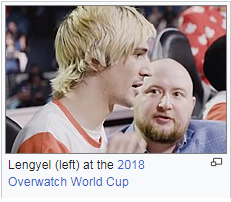

xQc
Introduction
From Wikipedia, the free encyclopedia
Félix Lengyel (French pronunciation: [feliks lɑ̃ʒɛl];[a] born November 12, 1995), better known as xQc or by his former screenname xQcOW, is a Canadian Twitch streamer, internet personality, and former professional Overwatch player.
Lengyel began his esports career in 2016, while also regularly streaming. Most notably, he played for the Dallas Fuel in the Overwatch League's inaugural season, before being released midway through the season due to repeated controversy and suspensions, as well as for Team Canada in the Overwatch World Cup from 2017 to 2019.
After leaving competitive Overwatch, Lengyel focused on a full-time streaming career on Twitch, while being a content creator for organizations such as Sentinels and Luminosity Gaming. Although he has been temporarily banned multiple times on the platform, he was the most watched streamer on Twitch in both 2020 and 2021.
Career
Early streaming
Lengyel was streaming on Twitch when he was 19 years old, playing League of Legends (LoL), and streamed under the alias xQcLoL.[2] The online alias of xQc came from the last letter of his first name, x, and the abbreviation of his home province Quebec, QC.[3] With the release of Blizzard Entertainment's video game Overwatch (OW) in 2016, Lengyel transitioned to mostly playing Blizzard's title; becoming so synonymous with the game, he changed his alias to xQcOW.[2]
Esports
Lengyel began his Overwatch esports career competing in small online tournaments as a tank player for teams such as DatZit Gaming.[2] In October 2016, he was picked up by the multi-game esports organization Denial Esports.[4] After a few months, Denial disbanded, and the former members of the team operated as an independent roster under the moniker Yikes,[5] which was later changed to Arc 6.[6] The team competed in Season Zero of Overwatch Contenders, which is when his competitive drive increased to an unhealthy level. "I did not care about sleeping or eating well, keeping up with friends or family," he said. "I would only turn my phone on before going to bed. If I performed poorly I would put everything aside and play ranked until I felt better about my play."[7] Lengyel also played for Team Canada in their 2017 Overwatch World Cup campaign. He and the team reached the finals of the tournament, before being defeated by defending champions, South Korea.[8] Despite losing the finals, Lengyel was named the event's most valuable player.[9]
{kind=link}
Lengyel was signed to the Dallas Fuel of the Overwatch League (OWL) in October 2017, ahead of the league's inaugural season.[6] Prior to the start of the season, he received two suspensions on his personal Overwatch account from Blizzard. The first was a 72-hour suspension in November, after he misused the game's reporting system, and the second was a seven-day suspension in December after he threw games on stream.[10] Lengyel's OWL debut came in the Fuel's first match of the season, on January 10, 2018, in a 1–2 loss to the Seoul Dynasty.[11] Following team's third match of the season, a 0–4 loss to the Houston Outlaws on January 18, Lengyel made homophobic remarks on his personal Twitch stream towards Outlaws player Austin "Muma" Wilmot, who is openly gay. Lengyel apologized to Muma on Twitter later that day, stating that he did not mean to say anything with "malicious intent" and spoke "too fast." The Fuel responded to the incident by benching Lengyel in the following match, on January 19. That same day, the Overwatch League fined him $2,000 and suspended him for four matches. The Fuel then extended that suspension through February 10.[12]
Lengyel's first match back from his suspension was on February 23, in 3–1 win over the Los Angeles Gladiators.[13] However, his return did not last long, as he was fined $4,000 and suspended by the league for another four matches on March 10, after he used an emote in a "racially disparaging manner" during an Overwatch League stream and on his personal social media, as well as used "disparaging language" against Overwatch League broadcasters and players on his social media and personal stream.[14] The following day, Lengyel was released from the team.[15] In an interview with The Washington Post, Lengyel said that there were no racial undertones intended when he used the emote, and while he "did not feel like [he] did a mistake at all," he did regret using it because of how it was misconstrued. He went on to say that he enjoyed playing Overwatch professionally, but he was unsure if it was the career path he wanted continue to take.[16]Lengyel joined several Overwatch teams throughout the following years, including Overwatch Contenders teams GOATS and Gladiators Legion,[17][18] as well as competed for Team Canada in the 2018 and 2019 Overwatch World Cups.[19][20]